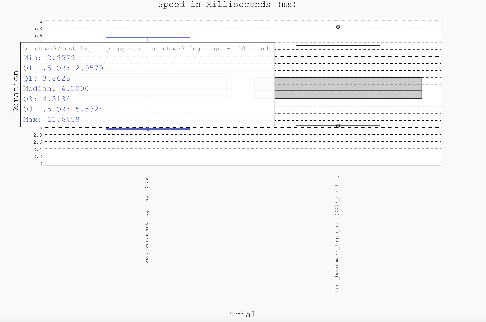

Welcome to ASAPP_QA_Automation’s documentation!¶
Indices and tables¶
Introduction
Pre-requisites
Test Strategy
Tech stack
How to Run
Reporting
CI/CD
Open Issues
Introduction¶
ASAPP_QA_Automation is a challenge to build and implement a test Strategy for a ecommerce store app built in REACT and python REST in the backend.
This project attempts to QA the ecommerce store at multiple test layers.
Some higlights of the framework are:
Best in the class framework design using facade design patter, page object model design patter, factory design pattern(To be implemented) |br|
Single framework for all the test layers like API, UI, API Benchmarking, API Performace |br|
CI/CD implemented with github actions
HTML reporting of the test run using pytest HTML
Best selenium tools used like docker selenium and webdrive manager
Dockerised the whole framework for easy consumption
Code is written with doc strings, loggers and comments for easy understanding
Test data as a json so adding a new testase is as simple as adding new json blob( sometime may require minimal code change )
Pre-requisites¶
Download the zip
framework structure as below
qa_auto_challenge_prj
/src
/api
Dockerfile
/ui
Dockerfile
/ASAPP_QA_Automation
Dockerfile
docker-compose.yml
Build the Images for API and UI:
docker build ./src/api -t asapp-qa-challenge-api
docker build ./src/ui -t asapp-qa-challenge-ui
Build the image for QA automation framework
docker build ./ASAPP_QA_Automation -t asapp-qa-challenge-qa
Test Strategy¶
Multiple layers of test is performed and as documented below
API layer testing
API endpoints robustness testing
An end to end workflow using APIs
UI layer testing
Different UI workflows for multiple customer scenarios
API Benchmarking
API’s are benchmarked to check on degradation
API performance
API’s are checked with load and performance testing simulating actual production scenarios.
Tech stack¶
pytest
selenium
html reporting
docker selenium and webdriver manager
github actions
documentation: sphinx and readthedocs
How to Run¶
There are two ways to run
Setup¶
Download the zip, from the root directory run docker-compose
docker-compose up -d
Run the below curl commands
curl -s -o - -w "%{http_code}" -X POST -d '{"username": "pavan", "password": "pavan123"}' -H 'Content-Type: application/json' http://localhost:5000/users/register
curl -s -o - -w "%{http_code}" -X POST -d '{"username": "pavan", "password": "pavan123"}' -H 'Content-Type: application/json' http://localhost:5000/users/login
Warning
Though this is handled in the code, some descrepencies are seen so running these curls for better test execution. This can be fixed in the product
(1) Standalone¶
Download the zip and framework structure is defined in Pre-requisites section.
1python3 -m venv asapp-qa-challenge
2source asapp-qa-challenge/bin/activate
3pip install -r ASAPP_QA_Automation/requirements.txt
4cd ASAPP_QA_Automation
5
6API functional tests
7 - pytest -sv --capture sys --html=api_test_endpoints.html api/tests/endpoint
8 - pytest -sv --capture sys --html=api_test_workflows.html api/tests/workflow
9
10UI tests
11 - pytest -sv --capture sys --html=ui_test.html ui/tests
12
13API Benchmarking
14 - pytest --benchmark-save=benchmark benchmark/test_login_api.py
15 - pytest --benchmark-compare=0003 --benchmark-json=report.json --benchmark-histogram=benchmark --benchmark-compare-fail=median:0.002 --benchmark-compare-fail=max:0.005 benchmark/test_login_api.py
16
17API Performace
18 - locust -f performance/api/login.py --headless -u 100 -r 5
(2) Docker¶
docker exec -ti qa_auto_challenge_prj-qa-1 bash
pytest -sv api/tests
Warning
Currently docker selenium and zalenium are crashing in Apple M1 so its recommended to run UI tests in standalone way.
Reporting¶
HTML reports are generated for every test run

For API benchmark testing, a histogram will be generated.
{kind=link}
Further, jenkins allure report can be done along with daily emails and/or slack reporting.
CI/CD¶
Github actions is implement for the automation repo.
https://github.com/pavankumarag/ASAPP_QA_Automation/actions
Warning
Since product is hosted, currently github action workflow are failing, once the product is hosted in the internet, workflow will start passing.
Open Issues¶
Bugs
- Descrepancy in swagger UI response message to actual message
Login 200 OK case -> Swagger says “Operation successful” but actual is “Login succeeded.”
Register with already exisrting user = for 409 swagger says “Duplicate Entry” but actual is “Username "pavan" already exists”
- Register: Empty username gets accepted
Register: Empty password gets accepted
No login check while adding the product to the cart
Add_to_cart api is accepting invalid quantity values
Cart add with “” quantity, breaks with invalid literal for int() with base 10. Should be handled in dev code
Add cart response message is wrong
(asapp-challenge) pkgovindraj@T3XJ736KQT ASAPP_QA_Automation % curl -s -o - -w "%{http_code}" -X POST -d '{"quantity":2}' -H 'Content-Type: application/json' http://localhost:5000/pavan/products/ASAPP%20Pens/add "QTY \"4\" of product \"ASAPP Pens\" added to cart" 200% (asapp-challenge) pkgovindraj@T3XJ736KQT ASAPP_QA_Automation %
- Response message could be better
EG “Product "PP Pens" does not exist.” can be proper like “Product “PP Pens” does not exist.”
- Improvement in framework
Test_login.py have 2 jsons(one for positive cases, one for negative cases) so we can have setup method to register user in login positive case
Factory pattern
- Improvement in product
Implement “Remove specific quantity of a product from Cart” feature.
HTTPS support